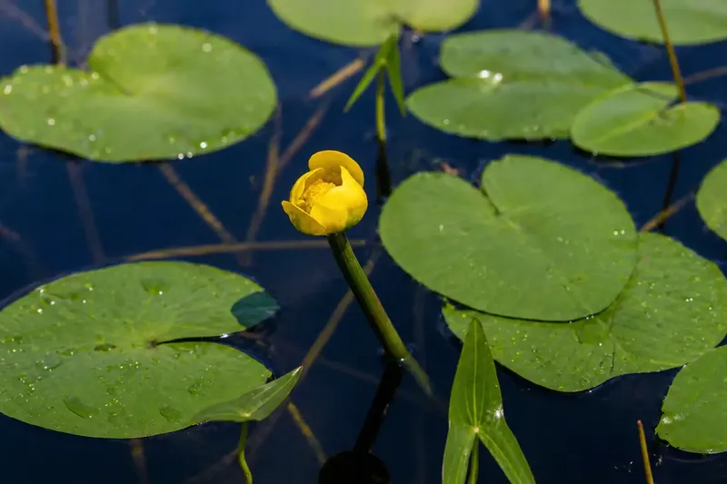

Растения для пруда
Кубышка желтая
Цена и наличие
- C1050 BYN / шт.В наличии
Данные на 23.11.2026.
Характеристики
- Преимущества
- Кубышка улучшает качество воды, поддерживает биологическое разнообразие, украшает водоемы и не требует особого ухода
- Период цветения
- Май-сентябрь
- Размер листьев
- 30 см в диаметре
- Размер цветов
- 5-6 см в диаметре
- Размер корневища
- 1-2 м
Описание
Кубышка (Nuphar) — водное растение с крупными плавающими листьями и ярко-желтыми цветами. Обитает в стоячих или медленно текущих водоемах. Имеет мощное корневище, закрепляющееся в грунте. Цветет с мая по сентябрь, улучшает качество воды и поддерживает биологическое разнообразие.
Кубышка (Nuphar) — это водное растение из семейства кувшинковых, которое часто встречается в прудах и озерах. Оно имеет крупные, плавающие на поверхности воды листья, которые могут достигать до 30 см в диаметре. Листья имеют сердцевидную форму и гладкую текстуру. Цветы кубышки ярко-желтые, чашевидные, диаметром около 5-6 см, и поднимаются над водой на длинных цветоносах. Корневище кубышки мощное и закрепляется в грунте на дне водоема. Кубышка предпочитает стоячие или медленно текущие воды, такие как пруды, озера и тихие реки, и хорошо растет на глубине от 0,5 до 2 метров. Кубышка приносит множество преимуществ. Во-первых, она помогает очищать воду, поглощая из нее излишки питательных веществ и предотвращая цветение воды. Растение выделяет кислород, что улучшает качество воды и создает благоприятные условия для водных обитателей. Во-вторых, кубышка предоставляет укрытие и пищу для многих водных животных, включая рыбу, амфибий и насекомых, а также может служить местом для гнездования водоплавающих птиц. В-третьих, яркие желтые цветы и крупные зеленые листья делают кубышку привлекательным элементом ландшафтного дизайна водоемов, помогая создать естественный и гармоничный вид пруда или озера. Наконец, кубышка не требует особого ухода и легко адаптируется к различным условиям. Растение легко размножается делением корневища или семенами, что упрощает его разведение. Таким образом, кубышка — это не только красивое, но и полезное водное растение, которое приносит множество экологических и эстетических преимуществ. Она улучшает качество воды, поддерживает биологическое разнообразие и украшает водоемы, делая их более привлекательными и здоровыми.